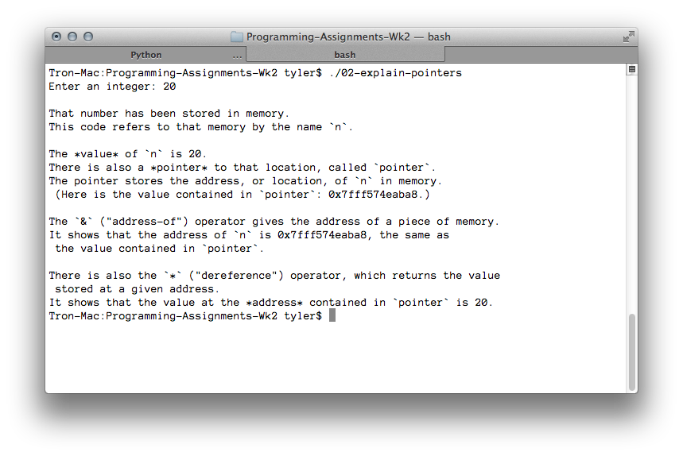

---

layout: default
title: 02-explain-pointers

---

{% highlight c++ %}
// Tyler Mumford, 2014
// Explain pointers, &, and *

#include <stdio.h>

int main () {
	int n;
	int *pointer;

	printf("Enter an integer: ");
	scanf("%d", &n);
	pointer = &n;

	// Exercise 2:
	printf("\n");
	printf("That number has been stored in memory.\n");
	printf("This code refers to that memory by the name `n`.\n\n");

	printf("The *value* of `n` is %d.\n", n);
	printf("There is also a *pointer* to that location, called `pointer`.\n");
	printf("The pointer stores the address, or location, of `n` in memory.\n");
	printf(" (Here is the value contained in `pointer`: %p.)\n\n", pointer);

	printf("The `&` (\"address-of\") operator gives the address of a piece of memory.\n");
	printf("It shows that the address of `n` is %p, the same as\n", &n);
	printf(" the value contained in `pointer`.\n\n");

	// Exercise 3:

	printf("There is also the `*` (\"dereference\") operator, which returns the value\n");
	printf(" stored at a given address.\n");
	printf("It shows that the value at the *address* contained in `pointer` is %d.\n", *pointer);


	return 0;
}

{% endhighlight %}


